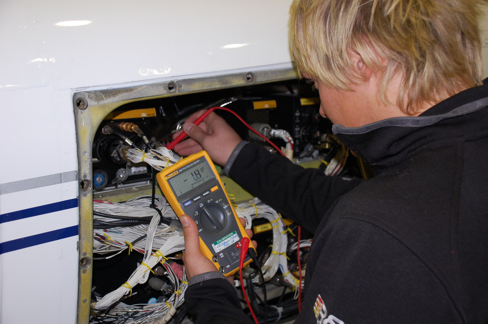

Version adaptée dys · Lesson 4
Lesson 4. Can you show me how?

Aménagements de la Lesson 4

Amorce (5 min)
Pour les élèves
Look at the painting. Imagine the tutor is speaking to a young person at a workbench. What is the first instruction of the day? Write one sentence, then tell your partner. Example: Put the cardboard boxes on the workbench.
Activité 1. Read a procedure (14 min). Compréhension de l'écrit.
Pour les élèves, texte A2
How to prepare an order in the workshop
Follow these steps carefully.
First, wash your hands and put on your gloves. Then, read the order form. Check the name and the number of boxes. Next, take the right cardboard boxes and put them on the workbench. After that, pack the products and close the boxes. Finally, write the order number on each box and take them to the delivery area.
If you are not sure, ask your tutor. Do not close a box before you check the order.
Pour les élèves, complément B1 (à ajouter sous le texte A2)
How to prepare an order in the workshop
Follow these steps carefully.
First, wash your hands and put on your gloves. Then, read the order form. Check the name and the number of boxes. Next, take the right cardboard boxes and put them on the workbench. After that, pack the products and close the boxes. Finally, write the order number on each box and take them to the delivery area.
If you are not sure, ask your tutor. Do not close a box before you check the order.
Important: if a box is damaged, do not use it. Take a new one and tell your tutor. You should also check that the workbench is clear before you start. You must not leave materials on the floor.
Pour les élèves, questions
Read the procedure and answer.
- What do you do first?
- What do you check on the order form?
- Where do you put the cardboard boxes?
- What do you do finally?
- What must you do if you are not sure?
- True or false: You can close the box before you check the order.
- (B1) What do you do if a box is damaged?
- (B1) Find one rule with must not and one piece of advice with should.
Corrigé
- You wash your hands and put on your gloves.
- The name and the number of boxes.
- On the workbench.
- You write the order number on each box and take them to the delivery area.
- You ask your tutor.
- False. The text says: "Do not close a box before you check the order."
- You do not use it. You take a new one and tell your tutor.
- You must not leave materials on the floor. / You should also check that the workbench is clear before you start.
Activité 2. The language of instructions (8 min).
Pour les élèves. Trace pour le cahier (amorcée ici, copiée proprement en fin de leçon)
Instructions at work
To give an instruction, we often use the imperative:
- Put on your gloves.
- Check the order.
- Switch off the machine.
- Ask your tutor.
To say what not to do:
- Don't touch that.
- Do not close the box before you check.
To ask for an instruction:
- Can you show me how to do this?
- What do I do first?
- Could you say that again, please?
- Is this correct?
To order the steps:
- First, ... Then, ... Next, ... After that, ... Finally, ...
Activité 3. Give and ask for instructions (16 min). Interaction orale.
Pour les élèves
Dialogue 3. A colleague explains a task
A: Can you show me how to prepare this order, please? B: Yes, of course. First, put on your gloves. A: All right. What do I do next? B: Then, read the order form and check the number of boxes. A: Sorry, could you say that again, please? B: Sure. Read the order form. Check the number of boxes. Next, put the boxes on the workbench. A: OK. And finally? B: Finally, write the order number on each box. Don't close a box before you check. A: Thank you. B: You're welcome. If you're not sure, ask me or ask the tutor.
Your task.
- In pairs, read the dialogue aloud twice. Change roles.
- Then write your own version for your trade (6 to 10 lines). You must include: a polite request, at least three steps with First / Then / Finally, and one Don't....
- Act out your dialogue. Your partner may ask Could you say that again, please? You must answer patiently.
Corrigé
Exemples de variantes réussies.
Maintenance :
A: Can you show me how to check the engine, please? B: Yes, of course. First, switch off the machine. A: All right. What do I do next? B: Then, put on your gloves and open this part. Next, check the cable. A: Could you say that again, please? B: Check the cable. If there is a problem, tell me. Finally, close the part. Don't switch on the machine before I come.
Building :
A: Can you show me how to measure this wall, please? B: First, put on your helmet. Then, take the tape measure. Next, measure from this corner. Finally, write the number on the plan. Don't walk under the scaffolding.
Sales :
A: Can you show me how to check this order, please? B: First, welcome the customer. Then, find the order number. Next, check the product on the shelf. Finally, pack it at the counter. Don't close the box before the customer checks.
Catering :
A: Can you show me how to prepare this starter, please? B: First, wash your hands. Then, check the order and the allergens. Next, cut the vegetables on the worktop. Finally, put the dish on the tray. Don't leave the knife on the edge.
Activité 4. Une procédure en quatre étapes, à voix haute (8 min).
Pour les élèves
On your own, write four instructions for a simple task in your workshop (A2: use the imperative only. B1: add one warning with Don't and one polite sentence to a new colleague). Then read your four steps to your partner, without showing the paper. Your partner listens and does the actions with gestures. After that, your partner says the steps back to you.
Trace écrite et travail à la maison (4 min).
Pour les élèves
Homework, Lesson 4
- Rewrite these sentences as instructions, with the imperative. a. You need to put on your gloves. b. You need to switch off the machine. c. You must not leave boxes on the floor. d. You need to ask the tutor if you are not sure.
- Complete with First, Then, Next, Finally. __________, wash your hands. __________, put on your gloves. __________, take the boxes to the workbench. __________, pack the order.
- Write a short procedure (five to six lines) for a task in your PFMP workplace. Use the imperative and the sequence words.
Corrigé
- a. Put on your gloves. b. Switch off the machine. c. Don't leave boxes on the floor. / Do not leave boxes on the floor. d. Ask the tutor if you are not sure.
- First, wash your hands. Then, put on your gloves. Next, take the boxes to the workbench. Finally, pack the order. (Then et Next sont interchangeables pour les étapes 2 et 3.)
- Exemple : First, put on your safety shoes and your gloves. Then, read the task on the board. Next, prepare the tools on the workbench. After that, do the task carefully. Finally, clean the workbench. Don't leave tools on the floor. If you are not sure, ask your tutor.